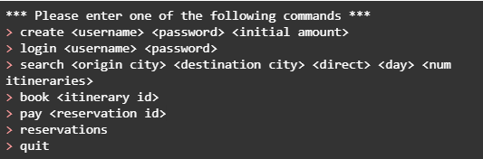
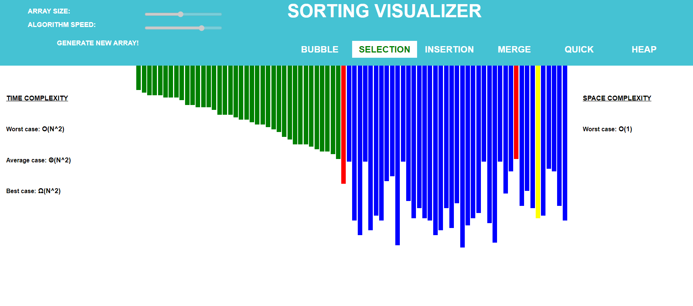
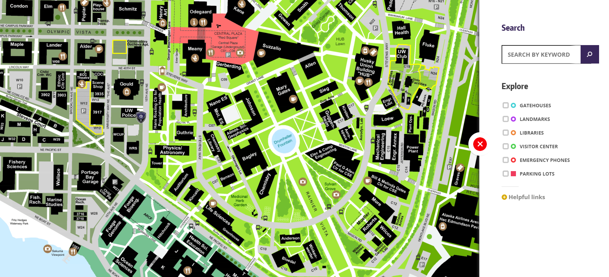
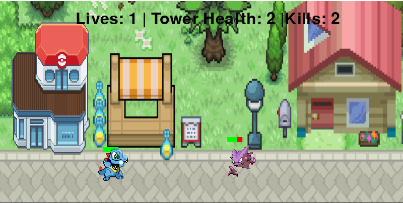

Hi, I’m Ray! I'm a computer science student with a passion for developing innovative software applications.
I'm currently pursuing my Bachelor's degree in Computer Science from the University of Washington and I’m expected to graduate in June 2024.
My areas of expertise include:
- Programming Languages: I'm proficient in Python, C, C++, HTML, CSS, and Javascript, and have experience developing many different applications and websites using them
- Web Develpment: I have experience using HTML, CSS, and JavaScript to build responsive and interactive websites. I've worked with frameworks such as React and Angular to build modern web applications.
- Software Engineering: I'm particularly interested in Software Engineering, and have worked on projects related to agile development, software testing, and project management
In addition to my technical skills, I believe I’m also a strong communicator and collaborator. I enjoy working in teams to tackle complex problems and finding creative solutions.
Outside of coding, I enjoy spending my time bouldering, skateboarding, playing video games, or watching anime.
If you'd like to learn more about my experience and skills, please continue scrolling, and feel free to contact me through my email, rayoh101@uw.edu!
Recent Projects

Flight Service | CSE 344 - University of Washington
- Designed a database using SQL Azure server for a flight booking system
- Implemented the flight booking application that allows users to create an account, log in, make reservations, pay, and more using Java and SQL

Sorting Visualizer | Personal Project
- Designed a web application that visually showcases different sorting algorithms in action using HTML, CSS, JS

Campus Paths | CSE 331 - University of Washington
- Designed, implemented, tested, and optimized a directed, labeled graph ADT that stimulated UW Campus and allowed clients to find the shortest path between two buildings using Djikstra’s pathfinding algorithm
- Implemented a GUI using React to interact with the UW Campus model
- Gained experience in software development and maintenance, project management, documentation, and testing

Tower Defense Game
- Designed a Poekon version Tower Defense Game modeled after the Bloons Tower Defense using python and pygame
Contact
Here is my contact info!